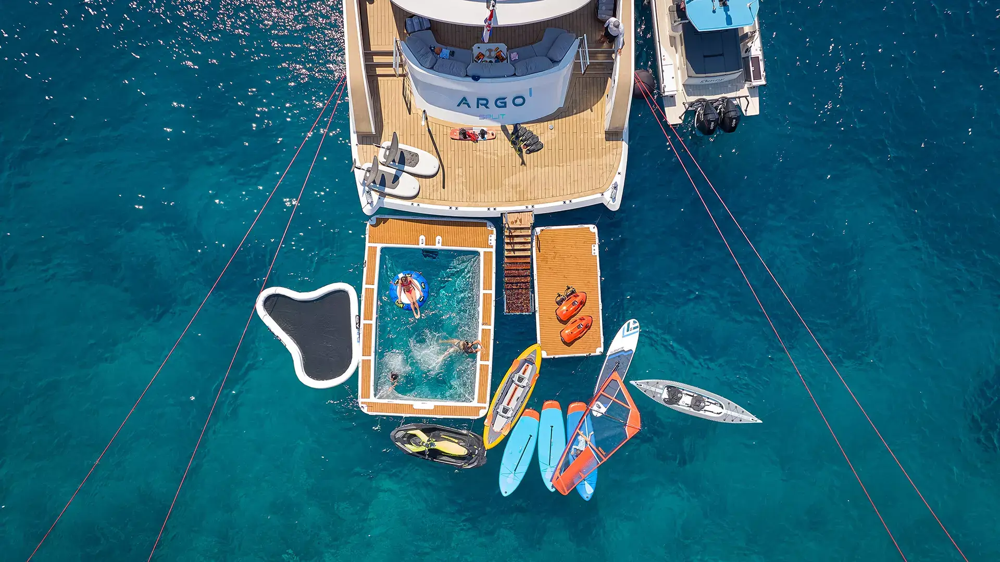
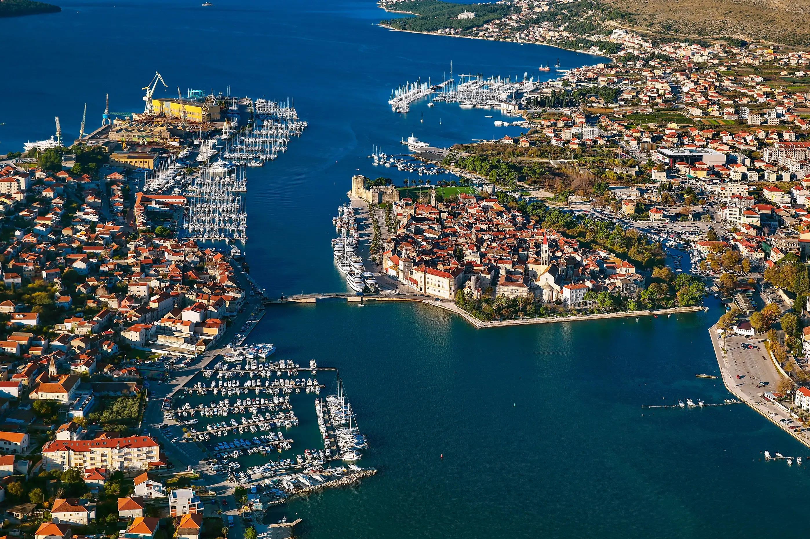
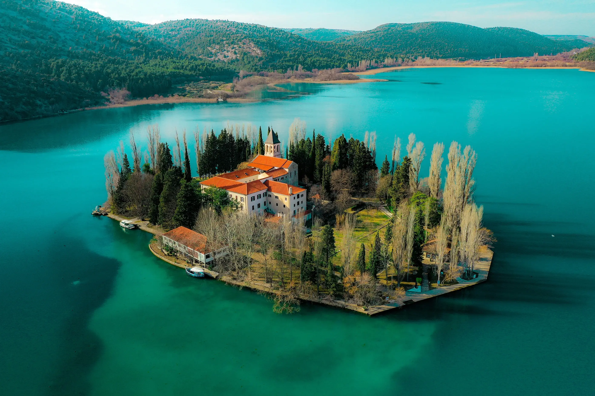
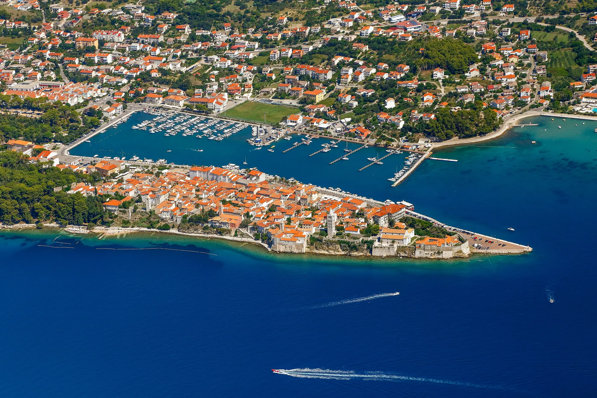
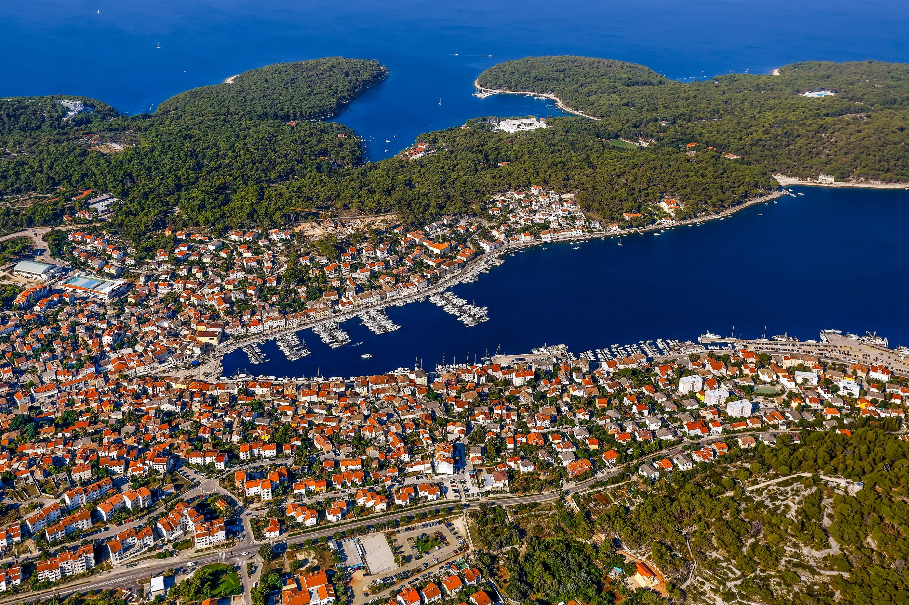
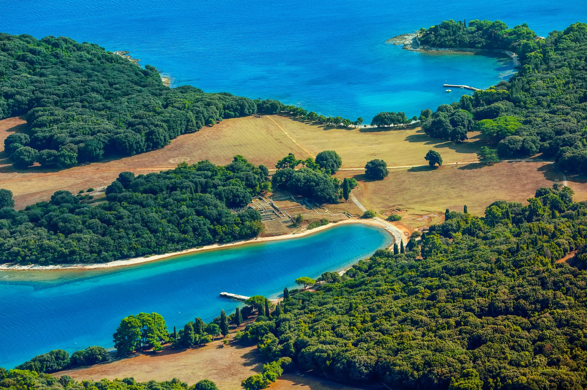
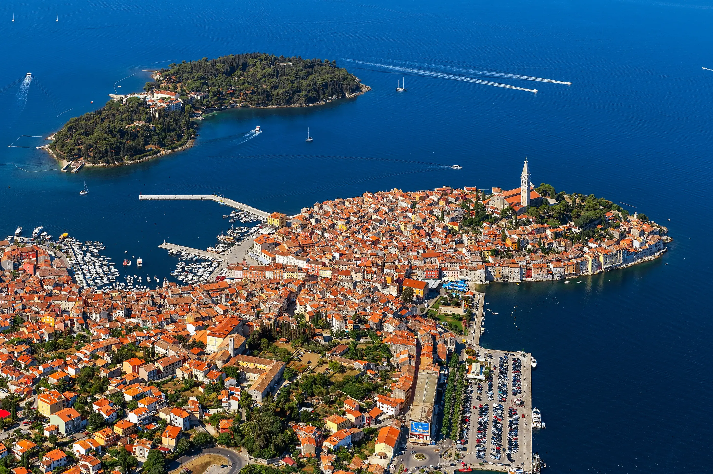

three national parks odyssey:
your 8-day escape

SPLIT TO ROVINJ




day 1: split to trogir
Embark in Split and enjoy a short, scenic cruise to the UNESCO World Heritage site of Trogir. This island-town is a living museum of Romanesque and Renaissance art, offering an enchanting start to your northern voyage.
day 2: šibenik and krka national park
Glide through the dramatic St. Anthony’s Channel to reach the stone-carved city of Šibenik, home to the magnificent Cathedral of St. James. The day continues with a private excursion to the ethereal beauty of Krka National Park, where the majestic Skradinski Buk waterfalls create a symphony of cascading water amidst lush, verdant landscapes.
day 3: kornati national park
Arrive at the charming archipelago of Kornati National Park, a constellation of nearly 300 islands where the unexpected awaits at every turn. From the surreal clarity of its waters to the sanctuary of its protected bays, we invite you to discover why this labyrinth of stone and sea is regarded as one of the most spectacular natural preserves in the Mediterranean.


day 4: rab
The island of Rab, with its four iconic bell towers, rises from the sea like a stone ship. Known for its sandy beaches and medieval festivals, it offers a delightful blend of history and relaxed coastal charm.
day 5: mali lošinj
Cruise to the “Island of Vitality.” Mali Lošinj is renowned for its fragrant air, filled with the scent of over a thousand species of medicinal herbs. It is a sanctuary for wellness, with elegant promenades and turquoise waters.


day 6: cres and brijuni national park
Experience the rugged, wild beauty of Cres, from the ancient hilltop village of Lubenice to secluded bays where griffon vultures soar above. The journey continues to the Brijuni archipelago, a national park of exceptional archaeological heritage and unhurried grace, where Roman ruins and exotic landscapes offer a refined glimpse into the region’s storied past.


day 7: rovinj
Our final destination is the enchanting town of Rovinj. With its pastel-colored houses rising directly from the sea and the soaring spire of St. Euphemia, it captures the romantic essence of the Istrian coast. Wander through its cobbled alleys as the town glows in the golden hour.
day 8: farewell
A final morning in the picturesque harbor of Rovinj before disembarkation, marking the conclusion of an extraordinary journey through the northern Adriatic, in the close proximity of Pula International Airport and Venice.
your unforgettable journey aboard argo
At Argo, a 55-meter floating paradise, every detail is designed for an unparalleled Adriatic experience. With 26 guests accommodated in absolute comfort, our dedicated yacht crew of 15 ensures flawless service from Split to Rovinj. Your custom itinerary guarantees seamless, private, and uninterrupted access to world-class Mediterranean destinations.